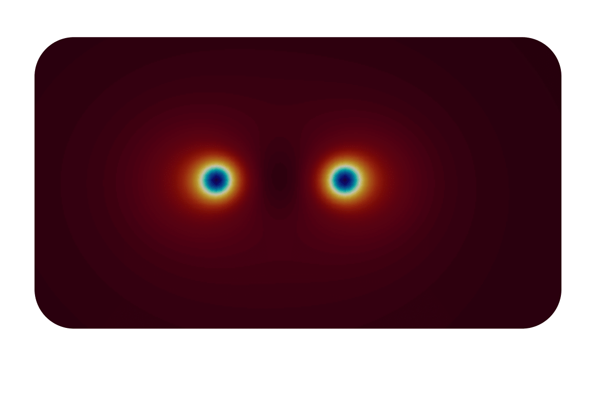

- Author
- Santo Maria Roccuzzo (santo.nosp@m.m.ro.nosp@m.ccuzz.nosp@m.o@gm.nosp@m.ail.c.nosp@m.om)
Simple dynamics of two vortices in a two-dimensional dipolar Bose gas, using GPU acceleration.
Introduction
In this example, we are going to see how to use NVIDIA GPUs to accelerate the Gross-Pitaevskii solvers available in UltraCold. A program using GPU accelerated UltraCold solvers is practically identical to one using only cpus, with only two important differences
- All GPU-accelerated Gross-Pitaevskii solvers belong to the
cudaSolvers namespace. Hence, to declare one such solver, the syntax is, for example cudaSolvers::DipolarGPSolver .
- In the CMakeLists.txt file, we have to specify that the programming languages used are both c++ and CUDA, i.e. we have a line like
project(example-5 LANGUAGES CXX CUDA)
The physics problem we are going to tackle is rather simple, namely the dynamics of two vortices in a two-dimensional dipolar Bose gas, with the dipoles eventually tilted with respect to the simulation plain (in our case, the x-y plain). In practice, we reproduce some simple results from this paper (see, in particular, figure 5b).
Program description
As always, we first create an input file containing our mesh and physical parameters, as well as other parameters determining the run-time behavior of the system. Such input file will be called example-5.prm and contain the following text
# Mesh parameters
xmax = 20 # Size of the mesh along the x-axis, in micrometers. The mesh will extend from -xmax to xmax
ymax = 20 # Size of the mesh along the y-axis, in micrometers. The mesh will extend from -ymax to ymax
nx = 512 # Number of points along the x-axis
ny = 512 # Number of points along the y-axis
omegaz = 1000
# Physical parameters
scattering length = 110.0 # Scattering length in units of the Bohr radius
dipolar length = 132.0 # Dipolar length in units of the Bohr radius
number of particles = 80000 # Total number of atoms
atomic mass = 164 # Atomic mass, in atomic mass units
theta = 0.78 # tilt angle in radiant
# Run parameters for gradient descent
number of gradient descent steps = 5000 # maximum number of gradient descent steps
residual = 1.E-12 # Threshold on the norm of the residual
alpha = 1.E-4 # gradient descent step
beta = 0.9 # step for the heavy-ball acceleration method
# Run parameters for real-time dynamics
number of real time steps = 5000 # Total number of time-steps for real time dynamics
time step = 0.001 # Time step for real-time dynamics, in milliseconds
In the source file, we then create a custom solver for a dipolar Gross-Pitaevskii equation in two space dimensions, overriding the function that writes the output at each (few) time steps in order to write, as usual, a .vtk file containing the wave function.
class Dipoles2d :
public cudaSolvers::DipolarGPSolver
{
public:
using DipolarGPSolver::DipolarGPSolver;
std::ostream& output_stream) override;
};
std::ostream &output_stream)
{
if(iteration_number % write_output_every == 0)
{
GraphicOutput::DataWriter data_out;
data_out.set_output_name("psi"+std::to_string(iteration_number));
data_out.write_vtk(x_axis,y_axis,wave_function_output,"psi","ASCII");
}
}
Definition: example-5.cpp:30
void write_operator_splitting_output(size_t iteration_number, std::ostream &output_stream) override
Operator splitting output.
Definition: example-5.cpp:40
We then read the input file using the class Tools::InputParser , set harmonic units (imagining that the system is in a quasi-two-dimensional setup due to a strong harmonic confinement along the z-axis) and create a mesh.
int main() {
Tools::InputParser ip("example-5.prm");
ip.read_input_file();
double xmax = ip.retrieve_double("xmax");
double ymax = ip.retrieve_double("ymax");
const int nx = ip.retrieve_int("nx");
const int ny = ip.retrieve_int("ny");
double scattering_length = ip.retrieve_double("scattering length");
double dipolar_length = ip.retrieve_double("dipolar length");
const int number_of_particles = ip.retrieve_int("number of particles");
const double atomic_mass = ip.retrieve_double("atomic mass");
double omegaz = ip.retrieve_double("omegaz");
double theta = ip.retrieve_double("theta");
const int number_of_gradient_descent_steps = ip.retrieve_int("number of gradient descent steps");
const double alpha = ip.retrieve_double("alpha");
const double beta = ip.retrieve_double("beta");
const int write_output_every=ip.retrieve_int("write output every");
const int number_of_real_time_steps = ip.retrieve_int("number of real time steps");
double time_step = ip.retrieve_double("time step");
const double hbar = 0.6347*1.E5;
const double bohr_radius = 5.292E-5;
omegaz *= TWOPI;
time_step = time_step*omegaz/1000.0;
const double a_ho = std::sqrt(hbar/(atomic_mass*(omegaz)));
scattering_length *= bohr_radius/a_ho;
dipolar_length *= bohr_radius/a_ho;
xmax = xmax/a_ho;
ymax = ymax/a_ho;
Vector<double> x(nx);
Vector<double> y(ny);
double dx = 2.*xmax/nx;
double dy = 2.*ymax/ny;
for (size_t i = 0; i < nx; ++i) x(i) = -xmax + i*dx;
for (size_t i = 0; i < ny; ++i) y(i) = -ymax + i*dy;
double dv = dx*dy;
Then, we set the initial wave function and external potential for the calculation of the stationary state of the system.
Here, we must be rather careful. The typical procedure for the phase imprint of a vortex in a Gross-Pitaevskii simulation is to multiply an initial wave function (for example, the ground state in a harmonic oscillator trap) with the desired phase pattern (in the simplest case, a simple factor \( e^{i\theta} \)), and then evolve the equation for just a few steps in imaginary time (or gradient descent). However, in the absence of trapping (as the case we are considering here) this procedure imprints vortices also at the boundaries, due to the non-matching of the imprinted phases at the boundaries between our wave function and its repeated periodic copies. In order to overcome this problem, one typical procedure is to restrict the physical domain into only one-fourth of the simulation mesh, and to imprint appropriately other (non-physical) vortices and anti-vortices in such a way that the phase at the boundaries of the physical domain is zero. Here, we choose, as our physical domain, the quadrant with boundaries \( [0,x_{max}] \) along the x-axis and \( [0,y_{max}] \) along the y-axis. Choosing then a point \( (x_1,y_1) \) into this quadrant, we also need to imprint anti-vortices at \( (-x_1,y_1) \) and \( (x_1,-y_1) \), and a vortex at \( (-x_1,-y_1) \). This is exactly what is done in the next lines, where we imprint two vortices in the physical domain and the corresponding vortex and anti-vortices in the other quadrants:
double x_vortex1=-1/a_ho+xmax/2;
double y_vortex1=0./a_ho+ymax/2;
double x_vortex2=1./a_ho+xmax/2;
double y_vortex2=0./a_ho+ymax/2;
double phase;
std::complex<double> ci={0.0,1.0};
for (size_t i = 0; i < nx; ++i)
for (size_t j = 0; j < ny; ++j)
{
psi(i,j) = sqrt(density);
phase=atan2(y(j)-y_vortex1,x(i)-x_vortex1);
psi(i,j) *= sqrt_density*exp(ci*phase);
phase=atan2(y(j)-y_vortex1,x(i)+x_vortex1);
psi(i,j) *= sqrt_density*exp(-ci*phase);
phase=atan2(y(j)+y_vortex1,x(i)-x_vortex1);
psi(i,j) *= sqrt_density*exp(-ci*phase);
phase=atan2(y(j)+y_vortex1,x(i)+x_vortex1);
psi(i,j) *= sqrt_density*exp(ci*phase);
phase=atan2(y(j)-y_vortex2,x(i)-x_vortex2);
psi(i,j) *= sqrt_density*exp(ci*phase);
phase=atan2(y(j)-y_vortex2,x(i)+x_vortex2);
psi(i,j) *= sqrt_density*exp(-ci*phase);
phase=atan2(y(j)+y_vortex2,x(i)-x_vortex2);
psi(i,j) *= sqrt_density*exp(-ci*phase);
phase=atan2(y(j)+y_vortex2,x(i)+x_vortex2);
psi(i,j) *= sqrt_density*exp(ci*phase);
}
We next normalize the wave function, and declare our solver class
double norm = 0.0;
for (size_t i = 0; i < psi.size(); ++i) norm += std::norm(psi[i]);
norm *= dv;
for (size_t i = 0; i < psi.size(); ++i) psi[i] *= std::sqrt(number_of_particles/norm);
Dipoles2d gp_solver(x,y,psi,Vext,scattering_length,dipolar_length,theta);
and make some gradient descent step until the vortices are formed. Note that, for CUDA solvers, no residual is calculated (for brutal performance reasons)
std::fstream gradient_descent_output_stream;
gradient_descent_output_stream.open("gradient_descent_output.csv",std::ios::out);
double chemical_potential;
std::tie(psi,chemical_potential) = gp_solver.run_gradient_descent(number_of_gradient_descent_steps,
alpha,
beta,
std::cout,
write_output_every);
gradient_descent_output_stream.close();
and, finally, reinitialize the solver and run the real-time simulation
gp_solver.reinit(Vext,psi);
gp_solver.run_operator_splitting(number_of_real_time_steps,time_step,std::cout,write_output_every);
return 0;
}
As you can see, the syntax is practically identical to the one of non-CUDA solvers, since all the details of the GPU implementation are hidden inside the solver classes.
Results
After our few gradient descent iterations, our initial density profile in the physical domain look like this

While this is how the real-time evolution looks like
The plain program
#include "UltraCold.hpp"
{
public:
using DipolarGPSolver::DipolarGPSolver;
std::ostream& output_stream) override;
};
std::ostream &output_stream)
{
if(iteration_number % write_output_every == 0)
{
data_out.
write_vtk(x_axis,y_axis,wave_function_output,
"psi",
"ASCII");
}
}
int main() {
ip.read_input_file();
double xmax = ip.retrieve_double("xmax");
double ymax = ip.retrieve_double("ymax");
const int nx = ip.retrieve_int("nx");
const int ny = ip.retrieve_int("ny");
double scattering_length = ip.retrieve_double("scattering length");
double dipolar_length = ip.retrieve_double("dipolar length");
const int number_of_particles = ip.retrieve_int("number of particles");
const double atomic_mass = ip.retrieve_double("atomic mass");
double omegaz = ip.retrieve_double("omegaz");
double theta = ip.retrieve_double("theta");
const int number_of_gradient_descent_steps = ip.retrieve_int("number of gradient descent steps");
const double alpha = ip.retrieve_double("alpha");
const double beta = ip.retrieve_double("beta");
const int write_output_every=ip.retrieve_int("write output every");
const int number_of_real_time_steps = ip.retrieve_int("number of real time steps");
double time_step = ip.retrieve_double("time step");
const double hbar = 0.6347*1.E5;
const double bohr_radius = 5.292E-5;
omegaz *= TWOPI;
time_step = time_step*omegaz/1000.0;
const double a_ho = std::sqrt(hbar/(atomic_mass*(omegaz)));
scattering_length *= bohr_radius/a_ho;
dipolar_length *= bohr_radius/a_ho;
xmax = xmax/a_ho;
ymax = ymax/a_ho;
double dx = 2.*xmax/nx;
double dy = 2.*ymax/ny;
for (size_t i = 0; i < nx; ++i) x(i) = -xmax + i*dx;
for (size_t i = 0; i < ny; ++i) y(i) = -ymax + i*dy;
double dv = dx*dy;
double density = number_of_particles/(4*xmax*ymax);
double sqrt_density=std::sqrt(density);
double x_vortex1=-1/a_ho+xmax/2;
double y_vortex1=0./a_ho+ymax/2;
double x_vortex2=1./a_ho+xmax/2;
double y_vortex2=0./a_ho+ymax/2;
double phase;
std::complex<double> ci={0.0,1.0};
for (size_t i = 0; i < nx; ++i)
for (size_t j = 0; j < ny; ++j)
{
psi(i,j) = sqrt(density);
phase=atan2(y(j)-y_vortex1,x(i)-x_vortex1);
psi(i,j) *= sqrt_density*exp(ci*phase);
phase=atan2(y(j)-y_vortex1,x(i)+x_vortex1);
psi(i,j) *= sqrt_density*exp(-ci*phase);
phase=atan2(y(j)+y_vortex1,x(i)-x_vortex1);
psi(i,j) *= sqrt_density*exp(-ci*phase);
phase=atan2(y(j)+y_vortex1,x(i)+x_vortex1);
psi(i,j) *= sqrt_density*exp(ci*phase);
phase=atan2(y(j)-y_vortex2,x(i)-x_vortex2);
psi(i,j) *= sqrt_density*exp(ci*phase);
phase=atan2(y(j)-y_vortex2,x(i)+x_vortex2);
psi(i,j) *= sqrt_density*exp(-ci*phase);
phase=atan2(y(j)+y_vortex2,x(i)-x_vortex2);
psi(i,j) *= sqrt_density*exp(-ci*phase);
phase=atan2(y(j)+y_vortex2,x(i)+x_vortex2);
psi(i,j) *= sqrt_density*exp(ci*phase);
}
double norm = 0.0;
for (size_t i = 0; i < psi.size(); ++i) norm += std::norm(psi[i]);
norm *= dv;
for (size_t i = 0; i < psi.size(); ++i) psi[i] *= std::sqrt(number_of_particles/norm);
Dipoles2d gp_solver(x,y,psi,Vext,scattering_length,dipolar_length,theta);
std::fstream gradient_descent_output_stream;
gradient_descent_output_stream.open("gradient_descent_output.csv",std::ios::out);
double chemical_potential;
std::tie(psi,chemical_potential) = gp_solver.run_gradient_descent(number_of_gradient_descent_steps,
alpha,
beta,
std::cout,
write_output_every);
gradient_descent_output_stream.close();
gp_solver.reinit(Vext,psi);
gp_solver.run_operator_splitting(number_of_real_time_steps,time_step,std::cout,write_output_every);
return 0;
}
A class to output a data Vector in real space.
Definition: DataWriter.hpp:71
void set_output_name(const std::string &output_file_name)
Set the name for the output data file, input as an std::string.
Definition: DataWriter.cpp:31
void write_vtk(Vector< double > &x_axis, Vector< double > &y_axis, Vector< double > &real_output_vector, const char *vector_name, const char *format)
Write an output data file in .vtk format, for real 2D output.
Definition: DataWriter.cpp:805
GPU-accelerated solver for a dipolar Gross-Pitaevskii equation.
Definition: cudaDipolarGPSolver.cuh:43
All the classes and functions necessary to work with UltraCold.
Definition: BogolyubovSolver.cpp:25